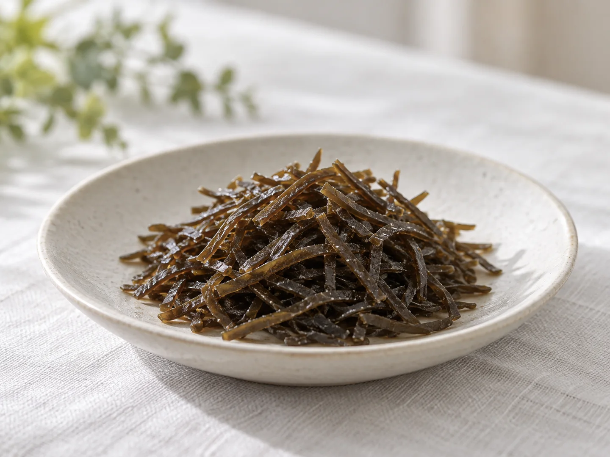
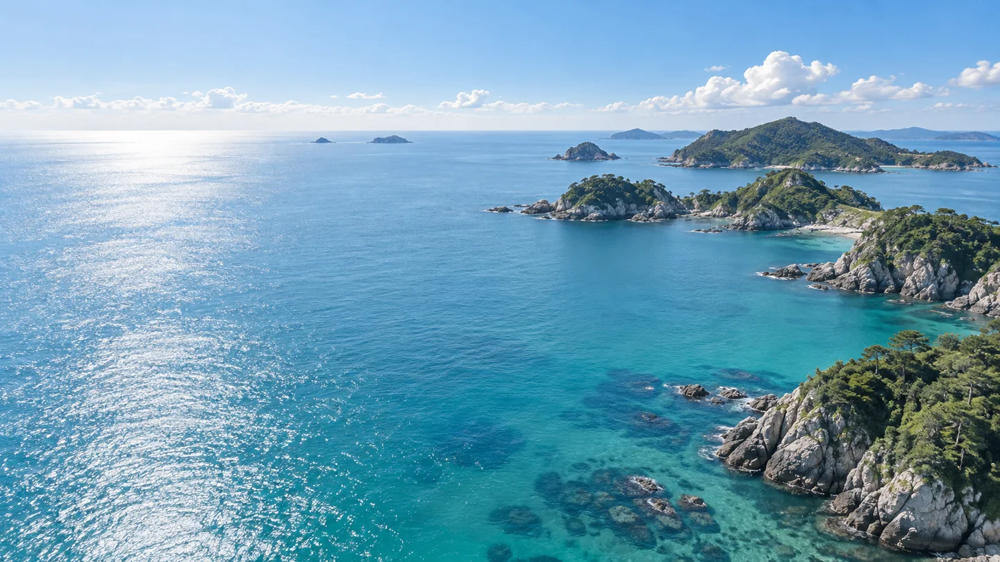
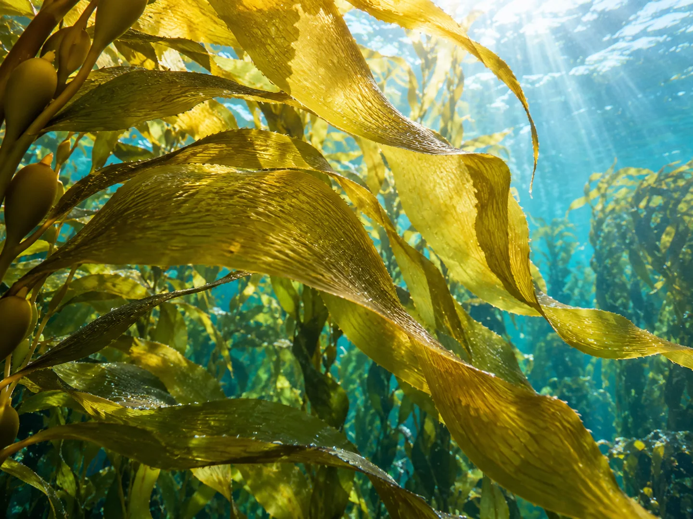
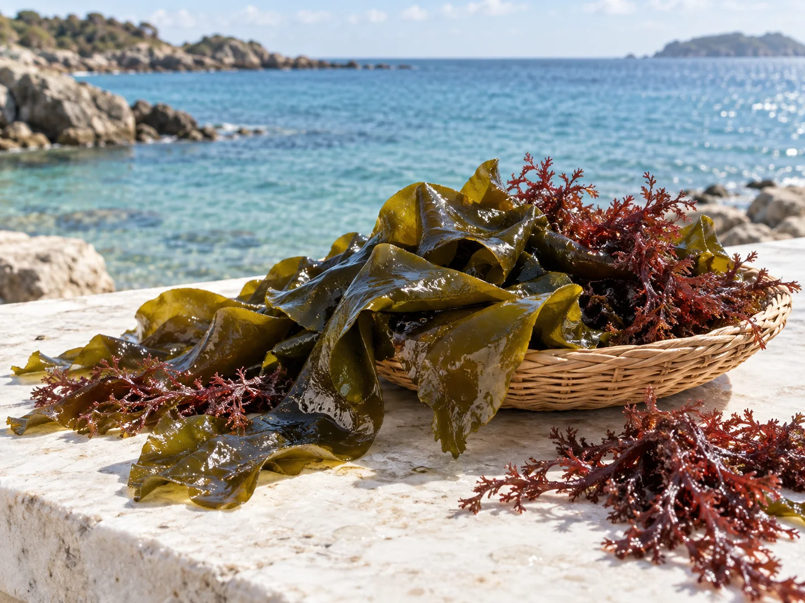

시오콘부
주먹밥, 무침, 볶음요리에
기호에 맞게 더해보세요.

해조류를 깊이 이해하고,
정직한 마음으로 식품을 만듭니다.

ABOUT ONDO THE SEA
온도더시는 바다를 사랑하는 해조류 전문가가 운영하는 식품 제조업체입니다.
고래풀은 온도더시가 만드는
식품 브랜드입니다.

OUR PRODUCT

주먹밥, 무침, 볶음요리에
기호에 맞게 더해보세요.
소비자 문의
070-8080-2862거래 · 협업 문의
contact@ondothesea.com